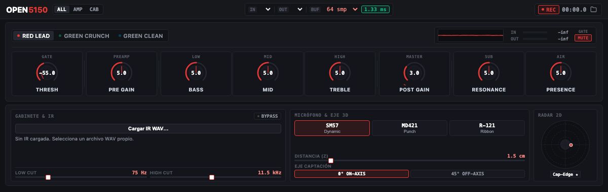

El carácter del 5150.
En tu Mac.
Un simulador de amplificador para tocar con tu guitarra o integrarla en una sesión. Sonidos limpios, crunch y alta ganancia, con tu propia IR de cabina.
Ver proyecto en GitHubPara macOS · Aplicación, AU y VST3
Instalación mediante compilación del código fuente.

Un amplificador.
Tres modos de tocar.
Elige un canal para conocer su carácter. Ajusta Pre Gain, Post Gain y la ecualización para darle forma a tu sonido.
Alta ganancia
Para riffs pesados y solos con sustain. Ajusta Pre Gain para encontrar el nivel de saturación y Post Gain para controlar la salida.
Elige el sonido
de tu cabina.
Carga una respuesta a impulsos en formato WAV y ajusta los filtros de graves y agudos. Los controles de micrófono y posición añaden matices mediante ecualización.
Consultar los detalles del cargador de IR- Mono o estéreo
- Las IR estéreo conservan sus respuestas izquierda y derecha.
- Remuestreo automático
- Adapta tu IR a la frecuencia del motor.
- Hasta dos segundos
- Usa respuestas cortas para reducir el consumo de CPU.
Toca por tu cuenta
o dentro de tu DAW.
El mismo amplificador en tres formatos para macOS. Los plugins permiten automatizar controles y guardar los ajustes en tu sesión.
Aplicación
Selecciona tu interfaz de audio, ajusta el buffer y graba en WAV sin abrir un DAW.
Audio Unit
Integra OPEN5150 en una sesión de un DAW compatible con AU.
VST3
Úsalo en un host VST3 con entrada mono, estéreo o mono con salida estéreo.
Empieza con OPEN5150.
Encontrarás el código, los requisitos y los pasos de instalación en el repositorio.